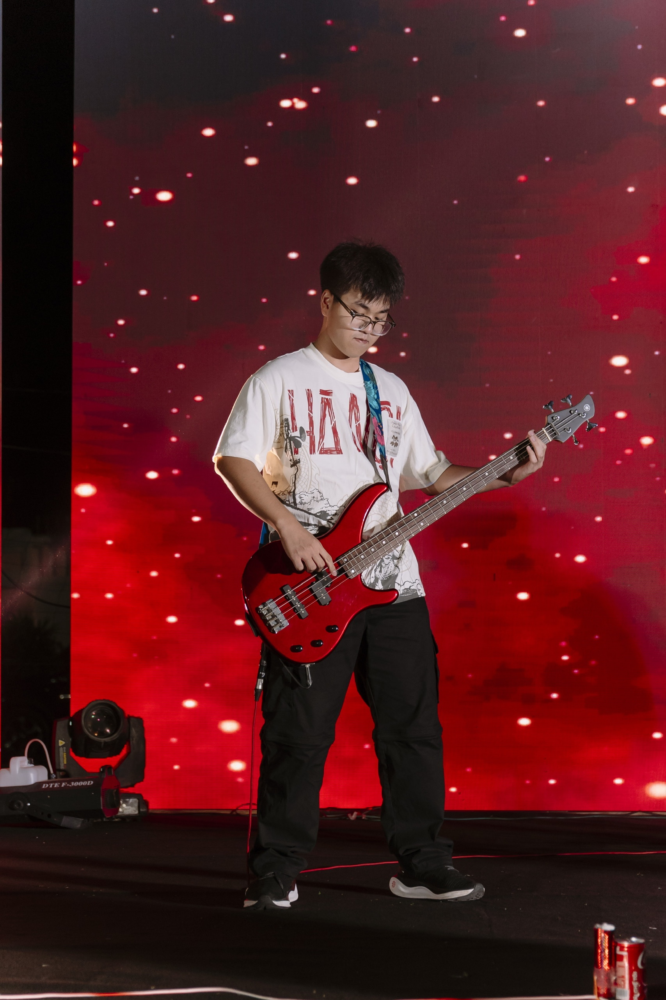

Portfolio môn Nhập môn Công nghệ số và Ứng dụng Trí tuệ nhân tạo
Xem dự ánXin chào! em là Trần Đức Hoàng, sinh viên trường Đại Học Công Nghệ, Đại Học Quốc Gia Hà Nội. Là sinh viên của ngành công nghệ kỹ thuật xây dựng, em có niềm đam mê mãnh liệt trong việc kiến tạo những sản phẩm chất lượng và mang lại giá trị thực tiễn. em luôn không ngừng học hỏi và đổi mới tư duy để vượt qua những giới hạn của bản thân.
Portfolio này là một hành trình thu nhỏ, nơi em tự hào chia sẻ những dự án tâm huyết nhất mà mình từng thực hiện. Từ bước lên ý tưởng ban đầu cho đến khi hoàn thiện, em luôn đặt sự tỉ mỉ, tư duy sáng tạo và tinh thần trách nhiệm lên hàng đầu. Đối với em, mỗi dự án đều là một cơ hội để giải quyết vấn đề một cách tối ưu và kể những câu chuyện mang dấu ấn riêng.
Mục tiêu ngắn hạn của môn học là trang bị cho sinh viên những kiến thức nền tảng và rèn luyện các kỹ năng thực hành thiết yếu nhằm ứng dụng ngay máy tính, công nghệ số và trí tuệ nhân tạo (AI) vào quá trình học tập và đời sống hàng ngày. Cụ thể, người học sẽ có khả năng sử dụng thành thạo các chức năng của hệ điều hành, phần mềm ứng dụng , cũng như biết cách tổ chức, lưu trữ và khai thác dữ liệu thông tin một cách an toàn, khoa học. Bên cạnh đó, sinh viên sẽ được thực hành kỹ năng viết câu lệnh (prompt) để tương tác với các mô hình ngôn ngữ lớn, qua đó dùng AI để giải quyết các nhiệm vụ học tập cơ bản, đồng thời nâng cao hiệu quả giao tiếp và làm việc nhóm trực tuyến. Môn học cũng hướng tới việc giúp sinh viên nhanh chóng nắm bắt quy trình sáng tạo và tự sản xuất được các sản phẩm nội dung số đa dạng phục vụ hiệu quả cho các hoạt động phát triển cá nhân.
Mục tiêu dài hạn của môn học là xây dựng tư duy phản biện và phát triển năng lực số toàn diện, giúp sinh viên trở thành những công dân số có bản lĩnh và trách nhiệm với cộng đồng. Về mặt chuyên môn, người học sẽ được định hướng tư duy để áp dụng AI như một công cụ đắc lực nhằm giải quyết các vấn đề phức tạp, tăng tốc độ khám phá trong nghiên cứu khoa học cũng như thực tiễn công nghệ. Quan trọng hơn, môn học chú trọng hình thành ý thức lâu dài về an toàn thông tin, giúp sinh viên biết cách nhận diện nguy cơ an ninh mạng để bảo vệ danh tính và thiết bị số. Cuối cùng, sinh viên sẽ thấu hiểu và tuân thủ nghiêm ngặt các nguyên tắc đạo đức, quy định pháp luật về bản quyền và liêm chính học thuật, đảm bảo việc sử dụng công nghệ số và AI luôn minh bạch, hợp pháp và có đạo đức.
Quá trình thực hiện Portfolio là một trải nghiệm học tập rất ý nghĩa đối với em. Thông qua việc tổng hợp các bài thực hành và sản phẩm đã thực hiện trong học phần "Nhập môn Công nghệ số và Ứng dụng Trí tuệ nhân tạo", em có cơ hội nhìn lại toàn bộ hành trình học tập của mình một cách hệ thống và trực quan.
Trong quá trình xây dựng Portfolio, em đã được tiếp cận với nhiều kiến thức mới về công nghệ số, trí tuệ nhân tạo, kỹ năng khai thác dữ liệu, giao tiếp số và sáng tạo nội dung bằng AI. Đặc biệt, việc sử dụng các công cụ AI để hỗ trợ học tập giúp em nâng cao hiệu quả tìm kiếm thông tin, phát triển tư duy sáng tạo và tối ưu hóa quá trình giải quyết vấn đề.
Bên cạnh những thuận lợi, em cũng gặp không ít khó khăn trong việc thiết kế giao diện website, tổ chức nội dung và trình bày các sản phẩm sao cho khoa học và dễ theo dõi. Tuy nhiên, chính những thử thách đó đã giúp em rèn luyện kỹ năng tự học, khả năng nghiên cứu tài liệu và tinh thần kiên trì trong công việc.
Sau khi hoàn thành Portfolio, em nhận thấy bản thân đã trưởng thành hơn về kỹ năng số, hiểu rõ hơn vai trò của công nghệ và trí tuệ nhân tạo trong học tập cũng như trong cuộc sống. Đây sẽ là nền tảng quan trọng để em tiếp tục phát triển năng lực chuyên môn và ứng dụng hiệu quả các công nghệ mới trong ngành Công nghệ Kỹ thuật Xây dựng trong tương lai.